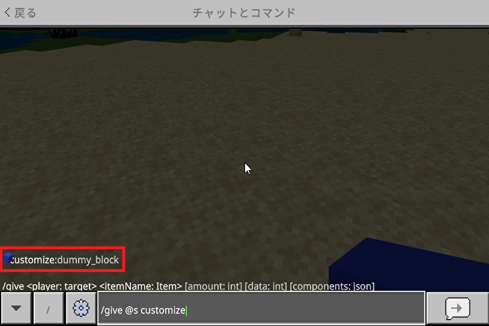
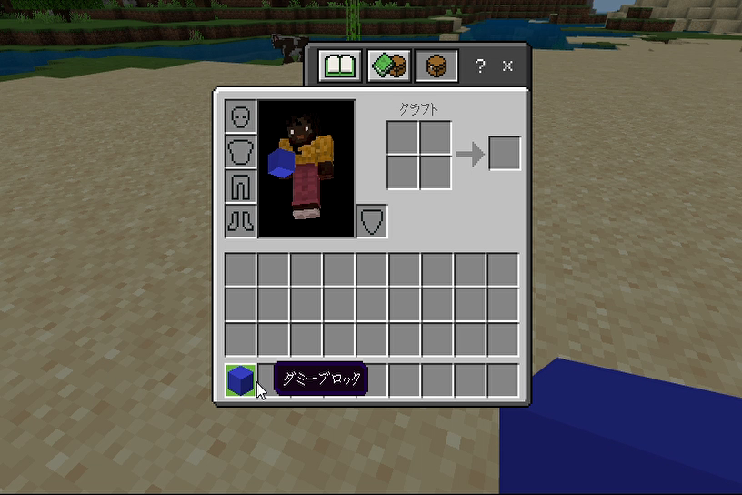
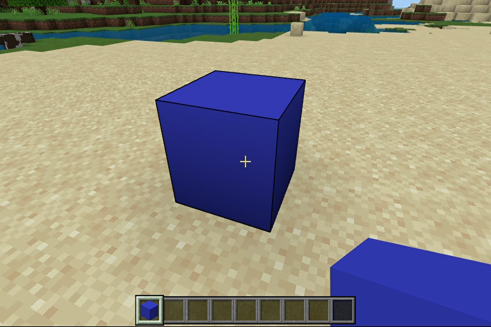
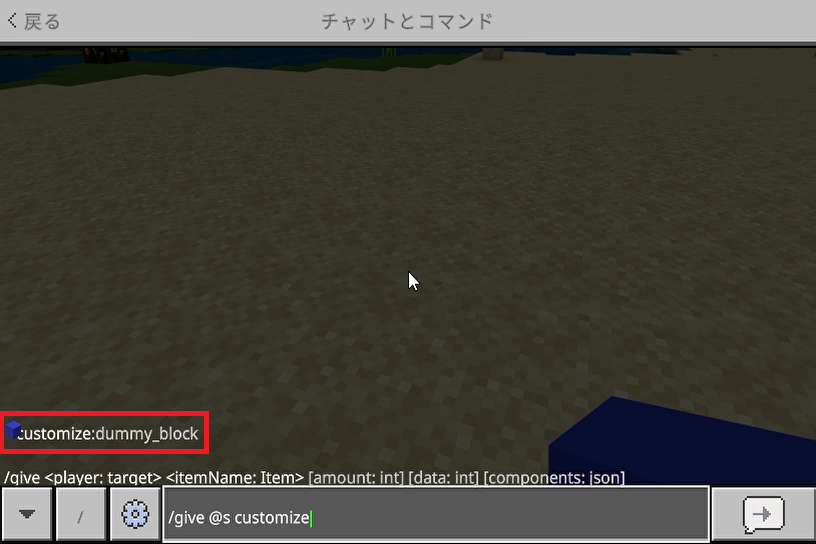
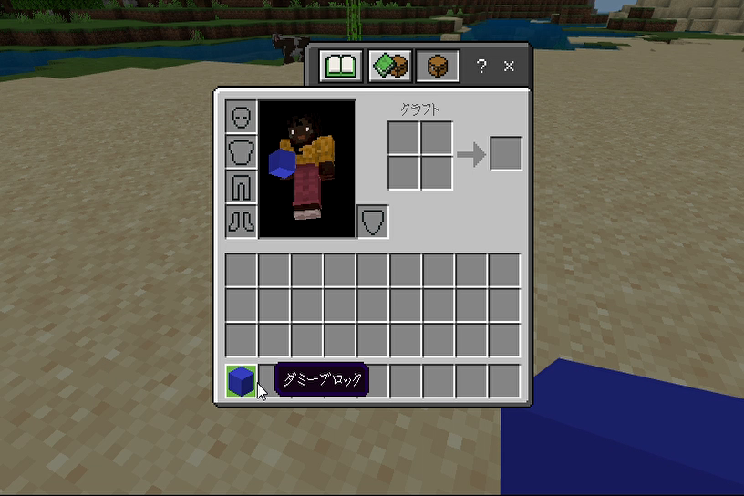
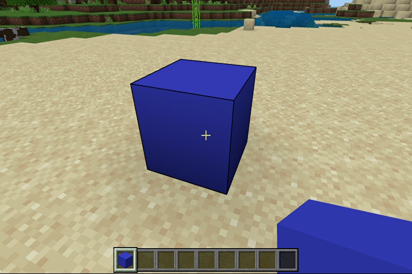

【ダミーブロック】
はじめに
ここでは本環境で利用しているダミーブロックの作り方を通して、カスタムブロックを作る上で最低限必要な基本部分の実装をまとめています。
定義ファイルの内訳
カスタムブロックを作るためにはビヘイビアパックとリソースパックの両方が必要になりますが、最低限以下のテクスチャを含めて５ファイルを追加すれば実装は完了します。
※ここでは
ビヘイビアパック内で必要になるファイル
リソースパック内で必要になるファイル
※ここでは
customize:dummy_blockというブロックIDを使う想定でファイル名を記載しています。ビヘイビアパック内で必要になるファイル
/<ビヘイビアパックのルート>
/blocks
dummy_block.json
リソースパック内で必要になるファイル
/<リソースパックのルート>
/texts
en_US.lang
/textures
/blocks
dummy_block.png
terrain_texture.json
blocks.json
定義ファイルの内容
ビヘイビアパック
blocks/dummy_block.json
{
"format_version": "1.20.80",
"minecraft:block": {
"description": {
"identifier": "customize:dummy_block"
},
"components": {
}
}
}
上記の黄色の部分は固定だとお考えください。
- ・description
-
- identifier
- ブロックIDを設定します。カスタムブロックを作る場合はネームスペース（今回の場合は"customize"）も入れましょう。
- menu_category
-
▶ダミーアイテムでご紹介したものがそのまま使えます。
このブロック自体が未定義の場合はどのメニューにも表示されません。
- ・components
-
この部分でブロックが持つさまざまな性質や機能を定義する事ができるので、見た目も含めたオリジナルコンテンツを作る時はこの部分の定義がメインになるでしょう。
ダミーブロックを作るだけなら空のままで問題ありません。
定義内容についての詳細は以下の>> コンポーネント定義の項目をご覧ください。
リソースパック
texts/en_US.lang
tile.customize:dummy_block.name=ダミーブロック
ここではブロック名を定義します。
カスタムエンティティを作成する場合と同様にen_US.langファイルが規定の言語ファイルになります。
textures/terrain_texture.json
{
"resource_pack_name": "family-customize",
"texture_name": "atlas.terrain",
"padding": 8,
"num_mip_levels": 4,
"texture_data": {
"dummy_block": {
"textures": "textures/blocks/dummy_block"
}
}
}
上記の黄色の部分は固定だとお考えください。
ここではテクスチャファイルの所在をキー名（命名は自由ですが、今回は"dummy_block"としています）と共に定義します。
- ・texture_data
-
この部分は他のカスタムブロック定義でも使うので、分かり易いように実装するブロック名をキーにするのがいいでしょう。
texturesの項目にテクスチャのパスを設定します。
textures/blocksに格納するので、今回の場合はネームスペースを省いてtextures/blocks/dummy_entityとしています。
{
"format_version": "1.19.30",
"customize:dummy_block": {
"textures": {
"up": "dummy_block",
"down": "dummy_block",
"north": "dummy_block",
"south": "dummy_block",
"east": "dummy_block",
"west": "dummy_block"
},
"carried_textures": "dummy_block",
"sound": "stone"
}
}
上記の黄色の部分は固定だとお考えください。
ここでは
textures/terrain_texture.jsonで定義したテクスチャ名を使って、六面のテクスチャを割り当てます。また、
textures/terrain_texture.jsonの定義内容と同様に、他のカスタムブロックの定義も入るので、ネームスペースを含めたブロック名、またはIDをキーとして使用します。- ・customize:dummy_block（カスタムブロック名、またはID）
-
- textures
-
ここには六面体の各面に貼り付けるテクスチャ名を指定します。
今回はtextures/terrain_texture.json内のtexture_data定義ブロック内で設定したdummy_blockを指定しています。
- up
- 上面のテクスチャ名を指定します。
- down
- 下面のテクスチャ名を指定します。
- north
- 北面のテクスチャ名を指定します。
- south
- 南面のテクスチャ名を指定します。
- east
- 東面のテクスチャ名を指定します。
- west
- 西面のテクスチャ名を指定します。
- carried_textures
-
アイテムスロットに表示するテクスチャ名を指定します。
ここで指定したテクスチャを１面分のテクスチャとして六面に配置した図形を自動で作成してくれます。
- sound
-
このブロックを置いたり、上を歩いたりした時のサウンドの種類を指定します。
指定できるサウンドについては以下を参照。
texturesの項目はなくてもcarried_texturesで指定したテクスチャで六面を補ってくれますが、各面に別々のテクスチャを使用する場合は必須になります。また、先を見据えて敢えて同じ内容を定義した上で後から入れ替えるようにする方法もアリだと思います。サウンドの種類
amethyst_block
amethyst_cluster
ancient_debris
anvil
azalea
azalea_leaves
bamboo
bamboo_sapling
bamboo_wood
bamboo_wood_hanging_sign
basalt
big_dripleaf
bone_block
calcite
candle
cave_vines
chain
cherry_leaves
cherry_wood
cherry_wood_hanging_sign
chiseled_bookshelf
cloth
comparator
copper
copper_bulb
copper_grate
coral
creaking_heart
decorated_pot
deepslate
deepslate_bricks
dirt_with_roots
dripstone_block
eyeblossom
frog_spawn
froglight
fungus
glass
glow_lichen
grass
gravel
hanging_roots
hanging_sign
heavy_core
honey_block
itemframe
ladder
lantern
large_amethyst_bud
lever
lodestone
mangrove_roots
medium_amethyst_bud
metal
mob_spawner
moss_block
moss_carpet
mud
mud_bricks
muddy_mangrove_roots
nether_brick
nether_gold_ore
nether_sprouts
nether_wart
nether_wood
nether_wood_hanging_sign
netherite
netherrack
nylium
packed_mud
pale_hanging_moss
pink_petals
pointed_dripstone
polished_tuff
powder_snow
resin
resin_brick
roots
sand
scaffolding
sculk
sculk_catalyst
sculk_sensor
sculk_shrieker
sculk_vein
shroomlight
slime
small_amethyst_bud
snow
soul_sand
soul_soil
sponge
spore_blossom
stem
ston
stone
suspicious_gravel
suspicious_sand
sweet_berry_bush
trial_spawner
tuff
tuff_bricks
turtle_egg
vault
vines
web
wet_sponge
wood
テストしてみる
ここまで定義できればダミーブロックとしての最低限の実装は完了です。
この時点で正しく使えるのかテストしておいた方がいいでしょう。
但し今のままでは、コマンドで取得したり設置もできますが、テクスチャがないので見た目がバグります。
そこで以下の手順に従ってテストを進めてください。
基本的にデザインやサイズ（１６×１６が一般的なようです）は何でも構いませんが、正方形の画像を用意して下さい（今回は青一色のテクスチャを適用しています）。

これが表示されればJSONファイルが正しく認識されています。
後は実際に

そしてそのダミーブロックを実際に設置してみて六面体が表示できていれば完成です。

この時点で正しく使えるのかテストしておいた方がいいでしょう。
但し今のままでは、コマンドで取得したり設置もできますが、テクスチャがないので見た目がバグります。
そこで以下の手順に従ってテストを進めてください。
①ダミー画像を設置
リソースパック内のtextures/blocksの場所にダミー画像を格納してください。基本的にデザインやサイズ（１６×１６が一般的なようです）は何でも構いませんが、正方形の画像を用意して下さい（今回は青一色のテクスチャを適用しています）。
textures/terrain_texture.json内のtexture_data定義内で指定したdummy_blockという名前がファイル名になるのでdummy_block.pngという名前にしておきます。②コマンドで取得する
コマンド行でgive @s customizeというところまで入力すると、入力補助の機能が働いて以下の赤枠部分のように選択できるブロックIDが表示されるはずです。
これが表示されればJSONファイルが正しく認識されています。
後は実際に
giveコマンドを使って取得すると以下のように表示されます。
そしてそのダミーブロックを実際に設置してみて六面体が表示できていれば完成です。

コンポーネント定義
これまでの設定でベースの部分は出来上がりました。
あとは用途に応じてビヘイビアパック内にある
ここでは
※一部例外はありますが、基本的に定義されていないデータブロック、および値は暗黙的にデフォルト値が適用されます。
あとは用途に応じてビヘイビアパック内にある
blocks/dummy_entity.jsonファイルのcomponents定義ブロックに都度必要な定義を追加していく事になります。ここでは
components定義ブロックのうち本環境で主に使っているものを中心にピックアップしておきます。- ・minecraft:light_emission（デフォルト：0）
-
光源レベルを0～15の範囲で設定します。
数字が大きいほど明るくなります。
- ・minecraft:collision_box（デフォルト：true）
-
エンティティと衝突するブロック領域をブール値、またはJSONオブジェクトで設定します。
trueに設定すると以下のデフォルト値で衝突判定が発生し、falseに設定すると衝突しなくなります。- origin（デフォルト：[-8.0, 0.0, -8.0]）
- 衝突ボックス境界の最小値を(-8, 0, -8)～(8, 16, 8)の範囲で設定します。
- size（デフォルト：[16.0, 16.0, 16.0]）
-
衝突ボックスの各辺のサイズを設定します。
- ・minecraft:loot
-
ブロックが破壊された時のドロップテーブルへのパスを設定します。
指定がない場合はブロックが必ずドロップします。
空のJSON、あるいは存在しないファイルを指定すると、シルクタッチを使わない限りドロップしません。
- ・minecraft:destructible_by_mining（デフォルト：true）
-
ブロックを破壊するのにかかる時間を設定します。
trueに設定すると以下のデフォルト値で時間が設定されます。falseに設定すると破壊できなくなります。- seconds_to_destroy（デフォルト：0.0）
- ブロックの破壊にかかる秒数を設定します。
- ・minecraft:destructible_by_explosion（デフォルト：true）
-
ブロックの爆発による破壊耐性を設定します。
trueに設定すると以下のデフォルト値で設定されます。falseに設定すると爆発による破壊はできなくなります。- explosion_resistance（デフォルト：0.0）
-
爆発耐性を設定します。
数値が大きいほど耐性が高くなります。
0以下の場合はすぐに破壊されます。
- ・minecraft:material_instances
-
以下の六面体のキー項目に対する定義を設定します。
- up
- 上面
- down
- 下面
- north
- 北面
- south
- 南面
- east
- 東面
- west
- 西面
- *
- 上記の項目に存在しない定義をここで補うためのワイルドカード的な存在です。
- texture
-
<リソースパック>/textures/terrain_texture.jsonで定義されているテクスチャ名を設定します。
ジオメトリ定義がないと有効にならないようなので注意が必要です。 - render_method（デフォルト："opaque"）
-
以下のいずれかのレンダリングメソッドを設定します。
- opaque
- 透明や半透明を許可しない。
- double_sided
-
バックフェイスカリングの完全無効化。
見た目はopaqueと変わらない。 - blend
-
透明や半透明を許可する。
バックフェイスカリングは有効になります。 - alpha_test
-
完全に不透明、または完全に透明なテクスチャを許可します。
バックフェイスカリングは無効化します。 - alpha_test_single_sided
-
完全に不透明、または完全に透明なテクスチャを許可します。
バックフェイスカリングは有効になります。
※一部例外はありますが、基本的に定義されていないデータブロック、および値は暗黙的にデフォルト値が適用されます。
おわりに
ダミーブロックが完成したら、テクスチャを張り替えるなりコンポーネント定義を追加するなりして、自分なりのカスタムブロックを作ってみましょう。
本環境では▶光の剣のページでご紹介させて頂いたコンテンツ内で今回の作り方をベースに応用しています。
本環境では▶光の剣のページでご紹介させて頂いたコンテンツ内で今回の作り方をベースに応用しています。